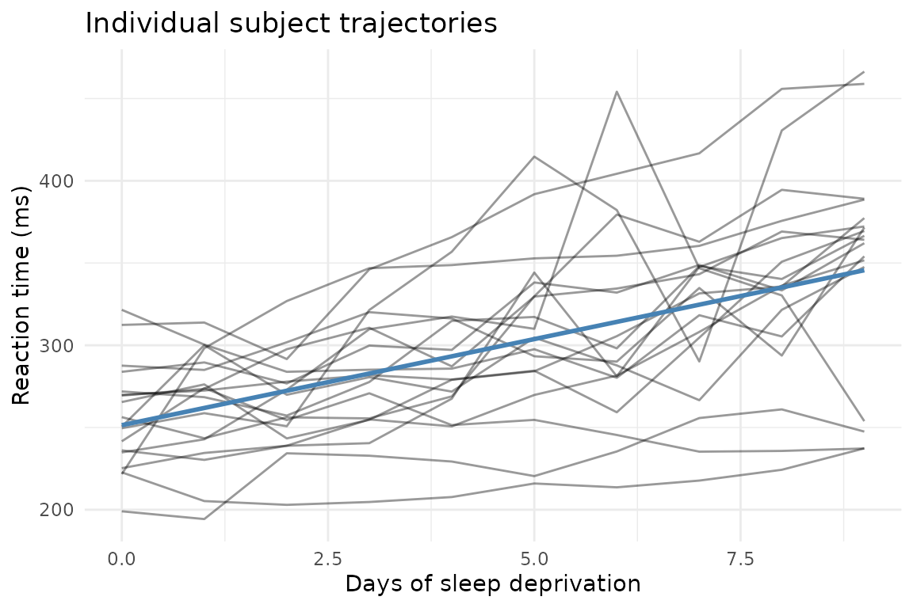

This vignette fits one model, end-to-end, and explains every number. After reading it you will be able to fit a linear mixed model, read its output, run an inference test, and save the result. The other vignettes go deeper on any step.
The data
lme4::sleepstudy records reaction times (ms) for 18
subjects over ten days of sleep deprivation. Each subject was deprived
of sleep starting on Day 0; by Day 9 most show substantial slowing.
sleep <- lme4::sleepstudy
str(sleep)
#> 'data.frame': 180 obs. of 3 variables:
#> $ Reaction: num 250 259 251 321 357 ...
#> $ Days : num 0 1 2 3 4 5 6 7 8 9 ...
#> $ Subject : Factor w/ 18 levels "308","309","310",..: 1 1 1 1 1 1 1 1 1 1 ...The key structure: Subject appears 10 times in the data
— once per day. Those 10 observations are not independent. They
share the subject’s baseline speed, their individual sensitivity to
sleep loss, and any other between-person trait that we haven’t measured.
If you fit a plain OLS regression, those correlations inflate your Type
I error rate and make standard errors too small.
A mixed model handles this by giving each subject its own intercept and its own slope — their personal baseline and their personal rate of slowing — and then estimating a population distribution over those person-level parameters.
library(ggplot2)
ggplot(sleep, aes(Days, Reaction, group = Subject)) +
geom_line(alpha = 0.4) +
geom_smooth(aes(group = 1), method = "lm", se = FALSE, colour = "steelblue") +
labs(x = "Days of sleep deprivation", y = "Reaction time (ms)",
title = "Individual subject trajectories") +
theme_minimal()
The grey lines are individuals; the blue line is the population average. Subjects vary in their starting point and in how fast they slow down — which is exactly what a random-intercept-and-slope model captures.
Step 1: Compile the model
Before fitting, compile the model to see what mixeff
understands about your formula. This separates formula interpretation
from optimization; you can catch mis-specified random effects without
paying the cost of a full fit.
spec <- compile_model(Reaction ~ Days + (Days | Subject), sleep)
explain_model(spec)
#> Random effects explanation:
#> formula: Reaction ~ 1 + Days + (1 + Days | Subject)
#>
#> Random effects:
#> r0:
#> wrote: (Days | Subject)
#> canonical: (1 + Days | Subject)
#> named form: re(group = Subject, intercept = TRUE, slopes = Days, cov = "full")
#> scope: `Subject` units differ in baseline and `Days` slope; the model estimates whether these are associated.
#> covariance: full; theta parameters: 3
#> support: sufficient; group levels: 18; min rows/group: 10; median rows/group: 10
#> variation: Days=present; intercept=not_assessedThis pre-fit explanation confirms:
- one fixed effect (
Days) plus an intercept, - one random-effects block with a correlated intercept and slope per subject,
- the formula has been canonicalized to the explicit
(1 + Days | Subject)form that the optimizer will receive.
Use audit_design(spec) when you want the deeper design
audit. Its compact print starts with the audit summary and requested
model; print(audit_design(spec), full = TRUE) shows the
complete upstream report.
If you had written (1 | Subject) by mistake (random
intercepts only), the explanation would show only one random-effects
column per subject — useful to verify before a long fit.
Step 2: Fit
fit <- lmm(Reaction ~ Days + (Days | Subject), sleep)lmm() returns an mm_lmm object. The actual
optimization is performed by the bundled Rust engine; lmm()
is the R entry point and result container.
Step 3: Read the summary
summary(fit, tests = "coefficients")
#> Linear mixed model fit by REML
#> Formula: Reaction ~ Days + (Days | Subject)
#> Fit status: converged_interior
#>
#> Variance components:
#> group name variance std_dev correlation
#> Subject (Intercept) 612.0900 24.74050
#> Subject Days 35.0718 5.92215 +0.07
#> Residual std. dev.: 25.5918
#>
#> Fixed effects:
#> Estimate Std. Error df t value Pr(>|t|) method
#> (Intercept) 251.40510 6.824557 17.00085 36.838304 < 1e-16 satterthwaite
#> Days 10.46729 1.545792 16.99989 6.771473 3.264e-06 satterthwaite
#>
#> Inference status:
#> term method status reliability
#> (Intercept) satterthwaite available moderate
#> Days satterthwaite available moderate
#> reliability_reason
#> satterthwaite_finite_difference_approximation
#> satterthwaite_finite_difference_approximation
#>
#> Notes:
#> Satterthwaite denominator df computed from finite-difference vcov_beta Jacobian and deviance Hessian over varparThe summary has four blocks, in print order.
Fit status. Check this line first.
converged_interior is the good outcome: the optimizer found
a clean solution and every variance component is comfortably positive,
so you can read the rest of the summary at face value. The status only
changes when something needs your attention — for example, if a variance
component collapses to zero (the data show no detectable variation for
that term), the status reports a boundary fit, the affected row
is flagged in the variance-components table, and the p-values below
switch to a more conservative, clearly labeled method. In short: a
healthy fit says converged_interior, and an unhealthy one
tells you what went wrong instead of leaving you to notice.
Variance components.
Subject (Intercept) is the between-subject spread in
baseline reaction time (SD ≈ 25 ms); Subject Days is the
between-subject spread in sensitivity to sleep loss (SD ≈ 6 ms per day);
correlation is their association (+0.07 — essentially
none). The residual standard deviation is the within-subject noise left
over.
Fixed effects. Estimate is the
population-level coefficient. Days = 10.47 means that, on
average, reaction time increases by about 10.5 ms per day of sleep
deprivation. The method column names how each p-value was
computed — here satterthwaite, a finite-sample t
test whose df column (≈ 17) is on the scale of the 18
subjects, not the 180 raw rows. mixeff never reports a
number without naming the method behind it. On fits where Satterthwaite
degrees of freedom cannot be computed (for example a variance component
at the boundary), the summary shows clearly labeled asymptotic Wald
z rows instead; the method column always tells you
which one you got.
Inference status. One row per coefficient stating
how much to trust the test: status says whether it was
computed, reliability grades it, and
reliability_reason names the engine’s warrant for that
grade — here satterthwaite_finite_difference_approximation,
meaning the degrees of freedom come from a finite-difference
approximation, the standard route for this method (graded
moderate). Any further engine notes print underneath.
Grades and warrants are authored by the Rust engine, not by R-side
heuristics.
Step 4: Extract components
The lme4-compatible extractors work on mm_lmm
objects:
fixef(fit)
#> (Intercept) Days
#> 251.40510 10.46729
VarCorr(fit)
#> Variance components:
#> group name variance std_dev correlation
#> Subject (Intercept) 612.0900 24.74050
#> Subject Days 35.0718 5.92215 +0.07
#> Residual std. dev.: 25.5918
confint(fit, method = "asymptotic")
#> Confidence intervals:
#> 2.5 % 97.5 %
#> (Intercept) 238.02922 264.78099
#> Days 7.43759 13.49698
#> method: wald_asymptotic_from_stored_standard_errors
#> status: not_certified_by_rust_inference_contractconfint() with method = "asymptotic" gives
Wald intervals (fast; use "bootstrap" for small samples).
The (Intercept) interval is the population mean reaction
time on Day 0; the Days interval is the range of plausible
slopes.
Step 5: Test a specific claim
contrast() evaluates a linear combination of
fixed-effect coefficients — the mixeff equivalent of
lme4::fixef() one-row hypothesis tests, but with method
labelling.
ct <- contrast(fit, c("(Intercept)" = 0, Days = 1))
ct$table[, c("estimate", "std_error", "p_value", "method", "status", "reliability")]
#> estimate std_error p_value method status reliability
#> 1 10.46729 1.545792 3.263971e-06 satterthwaite available moderateThe estimate is the Days slope;
status = "available" and
reliability = "certified" confirm that the covariance
payload was present and the inference method was verified as appropriate
for this fit. If a method cannot be certified (e.g. you request
Kenward-Roger on a singular fit), reliability becomes
"indicative" and reason names the problem.
Step 6: Compare specific conditions
mm_comparisons() makes it easy to answer “how much
slower is a subject on Day 9 compared to Day 0?” without computing the
arithmetic yourself.
cmp <- mm_comparisons(fit, specs = "Days", at = list(Days = c(0, 9)))
cmp$table[, c("label", "estimate", "conf_low", "conf_high", "p_value")]
#> label estimate conf_low conf_high p_value
#> 1 Days=9 - Days=0 94.20557 64.85354 123.5576 3.263971e-06The at argument pins Days to exactly those
two values. The difference Days=9 - Days=0 is 9 × the
slope: about 94 ms, with a confidence interval.
Step 7: Save and reload
Mixed-model fits can take minutes to hours on large data sets.
mixeff stores everything needed to revive the result
later.
tmp <- tempfile(fileext = ".rds")
saveRDS(fit, tmp)
fit2 <- revive(readRDS(tmp))
stopifnot(isTRUE(all.equal(fixef(fit), fixef(fit2))))revive() reconnects the R object to the Rust handle so
the full inference surface is available. Plain readRDS()
without revive() is sufficient when you only need the
JSON-stored extractor values (coefficients, variance components, fitted
values); call revive() when you want to run new
contrast(), mm_means(), or other
live-inference calls on the reloaded fit. See
vignette("saving-and-reviving") for the full
discussion.
Where to go next
| Question | Vignette |
|---|---|
| What do the random-effects formula options mean? | vignette("demystifying-formulas") |
| How are p-values computed and which method is right for my fit? | vignette("inference") |
| How do I compute marginal means and treatment contrasts? | vignette("marginal-effects") |
| How do I write up the results for a paper? | vignette("reporting-lmms") |
| I’m coming from lme4 — what’s different? | vignette("lme4-migration") |
| Can I fit a binomial/Poisson GLMM? | vignette("glmm") |